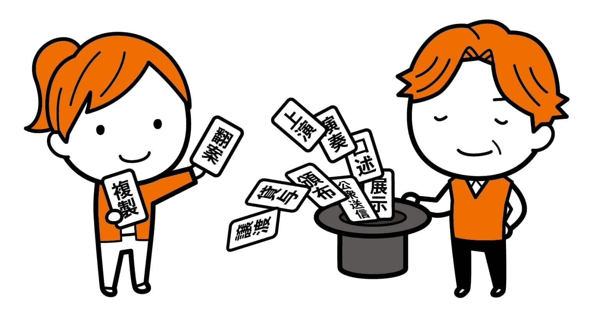
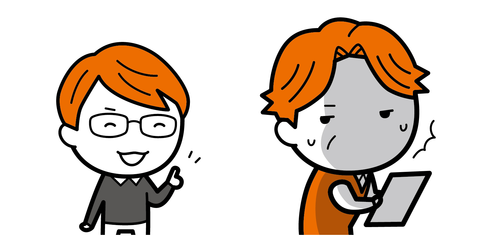
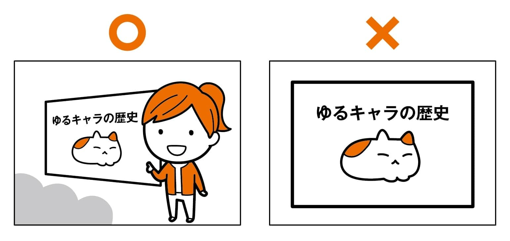
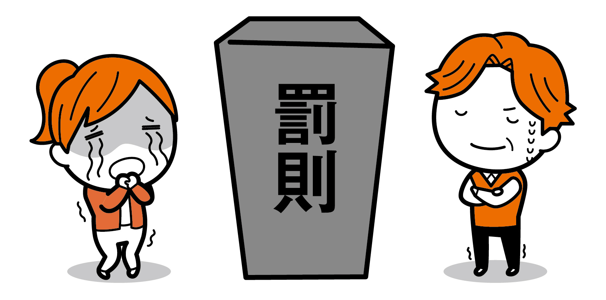

著作権は「勝手に〇〇されない権利」

隅木
- 著作権とは、簡単に言うと自分の著作物を「勝手に〇〇されない権利」です。

小中
- 勝手にコピーされない、勝手にリメイクされない、とかですね。
隅木
-
日本は「無方式主義」というやり方をとっていて、著作物がつくられた瞬間に自動的に著作権が付与されるようになっています。簡単に言うと、著作権を得るために登録とかの手続をしなくてもよいということです。
小中
- 小学生の描いた絵もですか？

大院
- 学生の書いたレポートも？

隅木
- そうです。
Point
著作物をつくったら、自動的に著作権は付与される（17条2項）
広義で言う著作権には、著作者のこだわりを保護する「著作者人格権」と財産的価値を保護する「著作財産権」の2種類があります。それぞれにどんな権利があるかを説明します。
著作者人格権
著作者人格権は、他人に譲渡することができず、相続もできません（59条、民法896条ただし書き）。そのため、著作権を譲渡しても著作者人格権は著作者に残ります。
著作者が死亡すると著作者人格権は消滅します。もっとも、著作権法には著作者死亡後も、著作物を公衆に提供したり、提示したりする者は、著作者人格権を侵害する行為をしてはいけない、と書かれています（60条）。
では、具体的に著作者人格権にはどのようなものがあるかを説明します。
公表権（18条）
公表権とはその名のとおり、未公表の著作物について著作者がどのように公表するか決められる権利です。なお、二次的著作物の著作者は、原著作物の著作者に断りなく二次的著作物を公表することはできません。
- 公表するかしないか
- いつ公表するか
- どのような形態で公表するか（出版、放送、上映、展示、公衆送信など）

小中
-
もしかして生徒の絵を市のコンクールに出したりするのも、本人の同意が必要ですか？
隅木
-
もちろん必要です。先生に宿題として絵を提出しただけだったら「公表」したとは言えません。
それを複数の第三者に公表するのですから、著作者である生徒さんの同意が必要です。
また、絵のコンクールなどは、普通絵をどこかに展示するので展示権の問題もあります。

小中
- そうなのですね、気をつけます。
氏名表示権（19条）
氏名表示権とはその名のとおり、著作物を公衆への提供もしくは提示をする際に著作者として表示する名前をどうするか決める権利のことです。
- 名前を表示するかしないか
- 表示する場合は、本名か変名（ペンネームや画号など）か
二次的著作物の場合は、原著作物の著作者と（19条1項後段）、二次的著作物の著作者の両方が氏名表示権を持っていることになります。氏名表示権にも一定の制限があり、次の場合には、氏名表示権の侵害にはなりません。
-
著作物を利用する際に、利用者はすでにその著作物で表示されている名前を表示することができます。著作者の特段の意思で別の名前を表示する必要がある場合は、意思に沿う必要があります（19条2項）。
-
表示するのが困難な場合で、著作者が創作者であることを主張する利益を害するおそれのない場合は、公正な慣行に反しない限り、氏名を表示しなくてもかまいません（19条3項）。
2つめは、例えばホテルのロビーなどでBGMを流している時に、いちいち「作曲者はだれそれです」などと放送しなくてよいという例などがあります。
同一性保持権（20条）
隅木
-
同一性保持権とは、自分の著作物の内容やタイトルを、自分の意に反して無断で「改変（変更・切除等）」されない権利です。
小中
-
写真をトリミングして使用したり、文章を変えたり……とか？
隅木
-
そうですね。文章は「・（中黒）」を「、（読点）」に変更、読点の削除や改行の省略、「現われ」を「現れ」に、「表われ」を「表れ」に、「決って」を「決まって」にするなどの送り仮名の変更も同一性保持権を侵害する可能性があるので注意が必要です。

大院
-
えー、そんなんおかしかったら直すだろ。学生の論文とかも表記ゆれはよくあるぞ。
隅木
-
表記ゆれを直してあげるのも本人の同意があればよいのです。というより、むしろ本人に直していただいたほうが、今後表記ゆれに気をつけるようになるかもしれません。それなら侵害にもなりません。

大院
- そりゃそうだな。
Memo
東京地判平成11年3月26日判時1694号142頁〔Dolphin Blue事件〕
Memo
東京高判平成3年12月19日判時1422号123頁〔法政大学懸賞論文事件〕
ただし、以下のような場合の改変は許されています（20条2項各号）。
-
教科用図書等への掲載（33条1項・4項）、教科用図書代替教材への掲載等（33条の2第1項）、教科用拡大図書等の作成のための複製（33条の3第1項）及び学校教育番組の放送等（34条1項）の適用により著作物の利用が認められる場合に、学校教育の目的上、やむを得ない改変
- 建築物の増築、改築、修繕又は模様替えによる改変
- プログラムのバージョンアップ等の改変
-
その他、著作物の性質並びにその利用の目的及びに照らしやむを得ないと認められる改変
（1）は、例えば難しい漢字をひらがなにして、低学年の生徒にも読みやすくするなどがあります。
（4）は、印刷機の性能の関係で、元のとおりに色合いが表現できないとか、音痴なので元のメロディのとおりに歌えないなどがあります。
具体的にどこまでが「やむを得ない」のかは難しい判断になります。自信が持てないときは著作者に確認をしたほうがよいでしょう。
Point
著作者人格権は、（1）公表権、（2）氏名表示権、（3）同一性保持権の3つ！
Memo
「著作者の名誉又は声望を害する方法によりその著作物を利用する行為」は、著作者人格権侵害とみなされます（113条11項）。厳密には権利として規定されていませんが、この規定は第4の権利として「名誉声望権」と呼ばれることもあります。
著作権（著作財産権）
財産権としての著作権には以下のようなものがあります。
Memo
著作物を見る、聴く、読むなどの知覚、享受行為自体については著作権者が把握することは困難であることから、著作権の対象となっておらず、その一歩手前の行為を著作権の対象としています（岡本薫『著作権の考え方』（岩波新書、2003）160頁以下参照）。
- 複製権（21条）
- 上演権及び演奏権（22条）
- 上映権（22条の2）
- 公衆送信権、送信可能化権、公の伝達権（23条）
- 口述権（24条）
- 展示権（25条）
- 頒布権（26条）
- 譲渡権（26条の2）
- 貸与権（26条の3）
- 翻訳権、翻案権（27条）
- 二次的著作物の利用に関する原著作者の権利（28条）
小中
- なんだかたくさんのいろいろな権利があるんですね。
隅木
-
そうですね。ちょっと難しそうだと感じる人もいるかもしれません。著作権は「権利の束」と言われることもあります。まずは、大きく2つの権利があると理解しておくとよいです。

小中
- たった2つでいいんですか！？
隅木
-
2つの権利が基本ですね。ひとつは、（1）著作物をコピーする権利。もうひとつは、（2）著作物を公に伝える権利です。

大院
- ふーん。それだったら覚えられるかも。
隅木
-
（1）の「コピーする権利」は、コピーがたくさん生まれると、それだけ公に伝えられる機会が増えるので、（2）の「公に伝える権利」の大前提みたいなものです。
（2）の「公に伝える権利」については、技術の進歩によって公に伝える手段が多様になるのにともない、権利が増えていきました。
目の前の人々に伝えるのが、「上演」、「演奏」、「口述」、「展示」です。技術が進歩して著作物をなんらかのかたちに固定できるようになると、遠くに離れた人々にもそれらを伝えることができます。それが「譲渡」、「貸与」、「頒布」です。さらに、かたちあるものでなくても遠くに離れた人々にも伝えるのが「公衆送信」、「送信可能化」ということになります。
小中
- 翻案はどう理解すればよいのですか？
隅木
-
翻案は、すでにある著作物に新たに創作的な要素を加えることです。なので、（1）の「コピーする権利」の仲間と理解しておいてください。
Memo
井上拓『SNS別最新著作権入門』（誠文堂新光社、2022）53頁は、著作権としてたくさんの権利があることをブドウの粒に例えて解説しています。

「section04
著作権とは」で説明したとおり、複製権なら「勝手に複製されない権利」となります。財産権としての著作権は、譲渡したり、相続したりすることが可能です（61条1項）。
例えば、「ズッコケ三人組」シリーズの作者である那須正幹さんは、遺言で全作品の著作権を文学団体に譲渡（遺贈）したと報道されています。
「翻案」は、著作権法独特の言い回しかと思いますが、脚色や映画化などにより二次的著作物を作成する行為のことです。
Memo
便宜的に翻訳、編曲、変形も含めて二次的著作物を作成する行為のことを「翻案」と呼ぶこともあります。
「公衆送信権」「送信可能化権」も耳慣れない言葉かもしれません。公衆送信権は、公衆（不特定の者、特定多数の者）に著作物を送信する権利です。例えば、公衆送信のうち、自動公衆送信は、Webサイトに載せて多数の人に閲覧させたり、SNSに投稿して多数の人に見せたりすることなどを指します。送信可能化は、送信したか否かにかかわらず、著作物をサーバ等にアップロードして、自動公衆送信が可能な状態にすることを指します。
小中
- 「公の伝達」は、公衆送信と何が違うんですか？
隅木
-
わかりやすい例で言うと、放送局がテレビ番組を放送するのが「公衆送信」、そのテレビ番組を食堂などに設置してあるテレビに映してお客さんが観ることができる状態にしているのが「公の伝達」になります。
小中
-
なるほど、すでに公衆送信されてるものをなにかの機械で受信して観せるってことなんですね。

隅木
-
ちなみに、放送される著作物について、通常の家庭用受信装置を使用した場合には、営利、有料であっても公の伝達権を侵害していることにはなりません。

大院
- おれは公の伝達はしてないな。
隅木
-
いえ、大院先生もしてる可能性はありますよ。例えば、授業でWebサイトを映して「ここをクリックしたらこれが表示されます」のような動作を見せている場合には、公の伝達になります。
大院
- 知らんかった！そんなものにも著作権があるんだ。
著作隣接権
著作物等を「伝達する者」に付与される権利として著作隣接権があります（89条）。著作権と同様に実演、音の固定、放送、有線放送を行った時点で自動的に付与され、登録は不要です（89条5項、101条1項）。
Point
著作隣接権は、著作物の伝達に重要な役割を果たす者を保護する権利
著作隣接権者としては、以下のような人たちがいます。
それぞれどのような権利があるか、文化庁のテキストなどをご参照ください。
- 実演家：著作物等を演じる歌手、俳優、ダンサーなど
- レコード製作者：音を最初に固定（録音）した者（レコード会社など）
- 放送事業者：放送を業として行う者（テレビ放送局、ラジオ放送局など）
- 有線放送事業者：有線放送を業として行う者（ケーブルテレビ、有線音楽放送局など）
小中
- もしかして、小学生がアイドルの真似してダンスしても実演家？
隅木
-
そうですね。そのダンスの様子を録画したり、Webサイトで公開したりするような場合には許諾が必要です。
大院
-
レコード製作者の「音を固定」って、おれが犬の鳴き声をスマホで録音しても該当するの？
隅木
- 該当します。この固定する「音」は著作物でなくてもよいのです。
大院
- おれもレコード製作者！
保護期間
著作権は永遠に存続するのではなく、保護される期間が決まっています。
著作権
- 著作物の創作時から著作者の死後70年（51条）
- 無名、変名、団体名義の著作物、映画の著作物は、著作物の公表時から70年（52条1項、53条1項、54条1項）
著作隣接権
- 実演は、実演時から70年（101条1項1号、同条2項1号）
- レコードは、音の固定（録音）時から発行後70年（101条2項2号）
- 放送・有線放送は、放送時から50年（101条2項3号、4号）
Column
戦時加算制度
著作権の保護期間については、第二次世界大戦中は著作権が保護されていなかったとして、1941年12月7日（開戦前日）に連合国及び連合国民が日本で著作権を有していたもの、1941年12月8日（日本が参戦した日）から、当該連合国について平和条約が発効した日の前日（例えばアメリカ合衆国であれば1952年4月27日）までに著作権を取得したものに関して保護期間を加算するルールがあります。
大院
-
あー、これ知ってるぞ。50年だったのに、で70年になったんだよな！

隅木
- そうなんですよね……
小中
-
わたしのおじいちゃんでも亡くなったのは10年前くらいなので、おじいちゃんの著作物があったら、あと60年は保護されるんですね。わ、わたし生きているかしら……
隅木
-
そう、70年も経つとお孫さんも生きていない可能性があるので、誰が著作権者かわからなくなってしまう場合が増えるかもしれません。
小中
-
許諾をとりたくても、著作権者が見つからなかったらどうしたらいいんですか？
隅木
-
文化庁長官に裁定してもらって、補償金を払うかわりに、適法に利用できる制度があります。
小中
- ちょ、長官に……
隅木
-
もちろん決まった手続があるので、長官に直談判しに行くわけではありませんよ。詳しくは4章で説明します。
Word
TPP（Trans-Pacific Partnership Agreement）
2016年2月4日に署名された経済連携協定である「環太平洋パートナーシップ協定」の略称。
Memo
小中先生のおじいちゃんの話には、注意点があります。
保護期間の終期は、著作者が亡くなった日から数えるのではなく亡くなった年の翌年1月1日から数えます（57条）。そのため、おじいちゃんが亡くなったのが、2012年5月1日だと、2013年1月1日から起算しますので、保護期間は70年後の2082年12月31日までとなります。
Point
保護期間は、基本的に著作物の創作時から著作者の死後70年まで
パブリックドメイン
パブリックドメイン（public domain）は、公有という意味です。著作権者の許諾なく、誰でも自由に利用できます。以下のようなものが該当します。
Memo
正確に言うと、パブリックドメインになれば、著作者の人格的利益を侵害しない限り、著作権の対象となっていた行為を自由にすることができます（最判昭和59年1月20日判時1107号127頁〔顔真卿事件〕）。
死後の著作者人格権の保護期間には限定がなく、理論上は永久に存続します。そのため、著作者の死後70年間が経過したパブリックドメインとなった作品も理論的には保護されます。
しかし、この死後の著作者人格権に関する請求ができるのは、死亡した著作者の「配偶者、子、父母、孫、祖父母又は兄弟姉妹」、つまり、二親等までとなっています（著作権法116条1項）。したがって、これらの者が死亡すれば請求権者がいなくなることで事実上、著作者の死後の著作者人格権の保護も終了します。
中山信弘『著作権法〔第3版〕』（有斐閣、2020）652頁参照。
- 著作物の保護期間が満了しているもの
- 著作権者が権利放棄したもの
- 著作権者が死亡して、相続人が不存在のもの（62条1項1号）
パブリックドメイン作品を元に創られた二次的著作物は、その二次的著作物が創られた時点から著作権が発生します。その二次的著作物までパブリックドメインでないことに注意してください。
小中
- 著作権フリーってやつですね。
隅木
-
「著作権フリー」はちょっと危険な言葉なんですよ。「著作権フリー＝著作権がない」と思い込んでる人が多いんですけど、違うんです。
小中
- 違うんですか？
隅木
-
著作権フリーと書いてあっても、権利を放棄していない場合があります。その場合はパブリックドメインにあたりません。
大院
- ネットで公開してるようなものは、別に勝手に使っていいんだろ？
隅木
-
違います、違います（汗）。
まずライセンスの条件を確認しましょう。
ライセンス
ライセンスとは、著作者や著作権者が「こういうふうに使ってもいいよ」と利用者に許可を与えることです。利用者から求めて個別に与えられる場合と、権利者があらかじめ提示している場合があります。
他の人の著作物を利用する際には、利用規約、利用契約、利用許諾書などを確認し、ライセンスがあるか、あるならどんな内容かを必ず確認するようにしましょう。
利用条件を確認する
最近、いろいろなところでお目にかかるイラストに「いらすとや」さんがあります。
「いらすとや」さんのホームページにいくと「ご利用について」と書かれているページがあるので、確認してみましょう。
当サイトで配布している素材は規約の範囲内であれば、個人、法人、商用、非商用問わず無料でご利用頂けます。
「そうか、無料で使っていいのか！」と安心してはいけません。この「規約の範囲内」をちゃんと確認する必要があります。「よくあるご質問」にも利用方法について丁寧に説明されているのでちゃんと読みましょう。
特に注意が必要なのは、商用利用で1つの制作物に21点以上のイラストを使う場合は有償となる旨が書かれていることです。
このようなイラスト素材や、写真素材を提供するサイトなどは、「利用について」「利用条件」「ライセンス」などの名前のところに、利用条件が書かれていることが多いので、よく確認してから使うようにしましょう。
みなさんがよく利用されているであろう「Googleマップ」もクレジット表記を必須としています。すでに表示されているクレジット表記を消して利用することは、契約違反や権利侵害となる可能性がありますので、注意しましょう。
クリエイティブ・コモンズ・ライセンス（Creative Commons License）
ライセンスとして有名なものに「クリエイティブ・コモンズ・ライセンス」があります。名前が長いので、略して「CC」と呼ぶこともあります。CCは、作品を公開する作者が「この条件を守れば私の作品を自由に使って構いません」という意思表示をするためのツールとして、世界中で使用されています。
本ウェブサイトも「CC BY 4.0」で公開しています（フッターにこのマークがついています）。
【クリエイティブ・コモンズ（CC BY 4.0）の表記】
これは「表示」というもので、「原作者のクレジット（氏名、作品タイトルなど）を表示すれば」、改変も営利目的利用もOKとなります。
たまに「CCついてるから自由に利用してもいいんだよね」と勘違いされてる方がいらっしゃいますが、BYでもクレジット表記は必須なので、注意してください。
CCではBYを必ずつけることになっています。その他に下の【クリエイティブ・コモンズの表記例】のように、表示を組み合わせて、作者が希望する条件を提示することができます。
【クリエイティブ・コモンズの表記例】| 表示 | 意味 | 概要 |
|---|
| SA | 継承 | 改変した場合、元の作品と同じCCライセンスをつけることが条件 |
| ND | 改変禁止 | 改変をしないことが条件 |
| NC | 非営利 | 非営利であることが条件 |
例えば、CC-BY-ND-NCの場合は、「クレジット表示、改変禁止、非営利」であれば、利用できることになります。全部で6通りの方法があります。
CC0もあり、これは権利の放棄を表明しているものです。CC0がついている著作物は自由に利用することができます。
詳しくはクリエイティブ・コモンズのサイトをご参照ください。
Memo
東京地判令和3年10月12日（令和3（ワ）5285）〔flickr投稿写真事件〕では、クリエイティブ・コモンズ・ライセンス（BY-SA）の下でflickrに投稿された原告（写真家）の写真を著作者のクレジットを表示せずに被告が自身のウェブサイトに利用した行為について、裁判所は公衆送信権、氏名表示権侵害にあたると判断しています。
小中
-
CCでなくても、利用条件のところに「クレジット表記」と書いてあるサイトもわりとありますね。
隅木
-
その場合は、ちゃんと作品名や著作者名を表記して、著作物を利用する必要があります。
大院
-
利用条件とかなんにも書いてなくても、ネットで公開してたら使ってもいいんだろ？
隅木
-
いいえ、なんにも書いてない場合は、基本的に利用の際には許諾が必要ということになります。ネットで公開してるからって、イコール自由に使っていいってことではないですよ。

権利制限
「section01
著作権法とは」で説明したように、著作権法は、著作者の権利の保護だけではなく、著作物の「公正な利用」も考えて、文化を発展させることを目的としています。
著作権法は、この「公正な利用」を促進するために著作権者の許可なく著作物を利用できる場面を規定していて、これらを「権利制限規定」と呼んでいます。著作権者の権利を制限して、公正な利用の範囲を定める条文になります。
Memo
著作権の権利制限は著作者人格権に影響を及ぼすものと解釈してはならないため（50条）、著作者人格権への配慮は必要となりますので、注意しましょう。
権利制限規定はたくさんありますが、本ウェブサイトを読んでくださってるみなさんに関係ありそうな規定をいくつか以下にあげます。これらにあてはまる場合には、著作権者の許諾がなくても利用できます。
私的使用のための複製（30条）
- 自分や家庭内その他これに準ずる限られた範囲内で使うためだけに自分で複製するのはOK
- 映画館などでの映画の盗撮は、自分しか観ないとしてもNG（映画盗撮防止法4条1項）
- 違法にアップロードされている著作物を著作権侵害物であると知りながらダウンロードするのもNG（30条1項3号）
小中
-
推し画像をホームページからダウンロードして、自分のスマホの待ち受けにするのは私的使用のための複製ですよね？
隅木
-
そのとおりです。でも、その画像をSNSにアップするのは公衆送信権侵害となってしまいます。30条で認められているのは複製だけですから。
大院
- 職員会議で新聞記事のコピーを配ったりするのは？
隅木
-
その会議は、業務目的なので私的とは言えないですよね。私的使用のための複製にはあたりません。
小中
- 町内会だったらどうですか？
隅木
-
それも「家庭内」や「これに準ずる限られた範囲内」とは言いづらい集まりなので、あてはまらないですね。
大院
- そういや自炊代行業者問題とかあったな……
隅木
-
あの事例では、購入した紙の本を電子化したい人が業者に依頼してスキャンさせていたのですが、その複製物を使用したい人が自分で複製しなければ30条にはあてはまらない、ということでした。
小中
- 私的複製と言ってもあまり広く複製していいわけじゃないのですね……
Memo
東京地判昭和52年7月22日無体例集9・2・534
Memo
東京地判令和4年11月8日（令和4（ワ）2229）は、「著作物の使用範囲が『その他これに準ずる限られた範囲内』といえるためには、少なくとも家庭に準じる程度に親密かつ閉鎖的な関係があることが必要である」と判示しています。
Memo
知財高判平成26年10月22日判時2246号92頁〔自炊代行事件〕
付随対象著作物の利用（30条の2）
- 写真や動画を撮った時に付随して著作物が軽微な構成部分として写ってしまうのはOK
- 付随して写ってしまった写真や動画を正当な範囲内で公衆送信OK
- でも著作権者の権利を不当に害する場合はNG
図書館等における複製（31条）
-
図書館は、営利を目的としない事業として、次の場合に図書館資料の著作物を複製できる
-
利用者の求めに応じて、公表された著作物の一部分の複製物を1人につき1部提供する場合
- 図書館資料保存のために必要な場合
- 他の図書館等の求めに応じ、絶版等資料の複製物を提供する場合
Memo
「一部分」については原則として著作物の「半分まで」と解されています。国立国会図書館の運用については、国立国会図書館「著作権にかかわる注意事項」を参照してください。
「著作権にかかわる注意事項」
https://www.ndl.go.jp/jp/copy/copyright/index.html
なお、令和3年著作権法改正により、国等の周知目的資料その他の著作物の全部の複製物の提供が著作権者の利益を不当に害しないと認められる特別な事情があるものとして政令で定めるものはその全部が対象になります（31条1項1号括弧書き）。
教科用図書等への掲載（33条）
- 学校教育の目的上、必要と認められる限度で教科書に掲載できる
-
教科書に掲載する際に、翻訳、編曲、変形、翻案OK
- 著作権者への通知と補償金が必要
Memo
用字又は用語の変更その他の改変で、学校教育の目的上やむを得ないと認められるもの（20条2項1号）は、同一性保持権の侵害にはなりません。
試験問題としての複製等（36条）
-
すでに公表されている著作物を、試験、検定の目的上必要な限度で試験、検定の問題として複製、公衆送信（放送、有線放送は除く）できる
- オンライン形式でする試験の場合もOK
- ただし、著作権者の利益を不当に害することとなる場合はNG
- 有料の検定、採用試験など営利を目的として利用する場合は、補償金の支払いが必要
-
過去の試験問題をWebで公開したり、オープンキャンパスで配布したりする場合は、36条の適用はできないため著作権者の許諾が必要
Memo
試験という性質上、事前に著作権者から許諾をとるのが適当ではないために設けられた規定です。
Memo
穴埋め問題など問題の性質上必要である場合に改変することは同一性保持権との関係で問題が生じるものの、やむを得ない改変（20条2項4号）として必要な範囲では許容されると解されます（上野達弘編『教育現場と研究者のための著作権ガイド』（有斐閣、2021）148頁以下参照、中山信弘『著作権法〔第3版〕』（有斐閣、2020）421頁以下参照）。
営利を目的としない上演等（38条）
-
営利を目的としない、観客から料金をとらない、出演者に報酬を支払わない場合に、公表された著作物を、公に上演・演奏・上映・口述OK
- 営利を目的としない、貸与を受ける者から料金をとらない場合は、CDなど公表された著作物の複製物を貸与OK
Point
権利制限は、著作者の権利を制限することで、公正な利用を促進しようとするもの。

以下の2つは、特に授業でよく使う権利制限規定なので、2章で詳しく説明します。
- 引用（32条1項）
- 教育機関における複製等（35条）
罰則規定
いろいろと守っていただきたいことを説明してきましたが、それらを破って故意に著作権侵害をしたとして、刑事裁判で「それは罪です！」となった場合には、10年以下の懲役もしくは1千万円以下の罰金、またはその両方（119条1項）が刑事罰として定められています。
小中
- やっぱり法律破ったら犯罪なんですね……
大院
-
でも著作権って親告罪なんだろ。
訴えられないと罪にならないんだろ？
隅木
-
著作権法が「親告罪」という制度をとっているのは、著作者や著作権者が別にいいと思ってる場合は起訴する必要がないからなんですよね。
しかし、起訴されないからやってもいいということではなく、法律違反であることには変わりありません。法律違反をしている限り、いつ告訴されるかわからないですよ。
平成30年の著作権法改正では、次の要件すべてを満たすものを「非親告罪」とし、告訴がなくとも起訴できることになりました（123条2項）。
- 対価を得る目的又は権利者の利益を害する目的があること
-
有償で公衆に提供され、又は提示されている著作物（有償著作物等）を原作のまま譲渡、公衆送信、その目的のために複製すること
- 有償著作物等の提供・提示により得ることが見込まれる権利者の利益が不当に害されること
具体的には、漫画・映画・アニメなどの海賊版を販売したりWebで公開したりすると、権利者本人の告訴がなくても刑事事件になりえます。
一方で、コミケなどで販売されている同人誌などの二次的著作物については、親告罪のままになっています。
